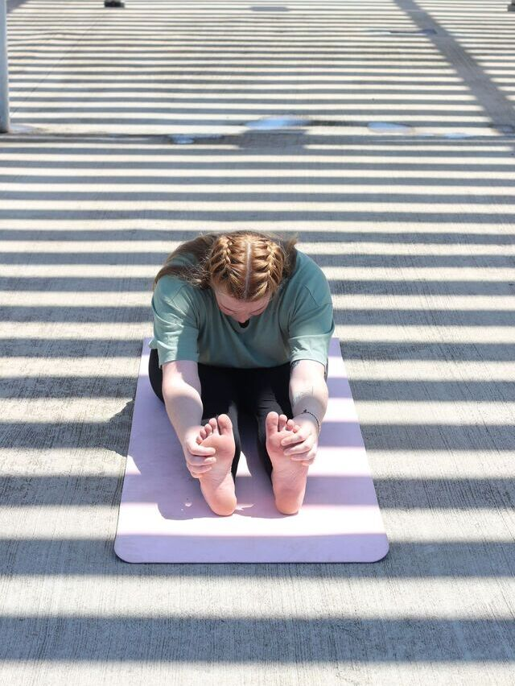
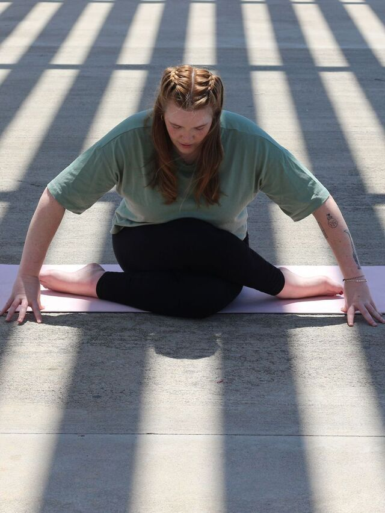
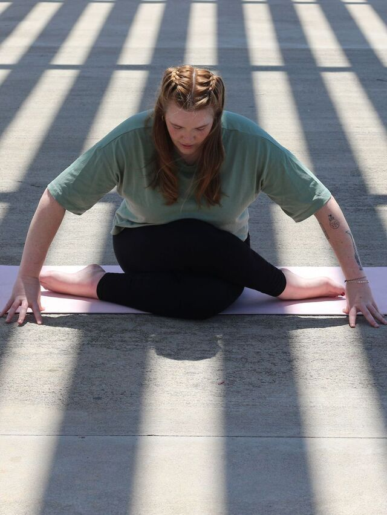
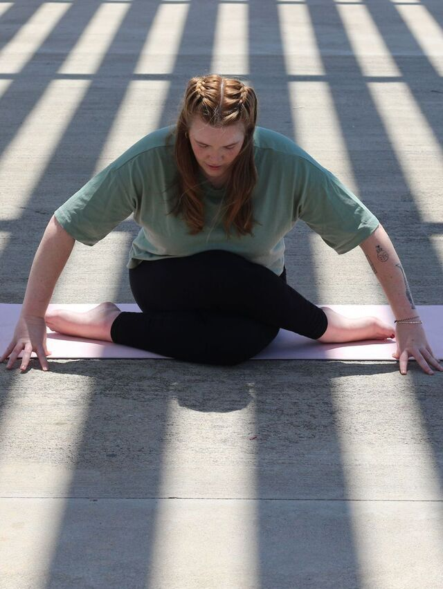
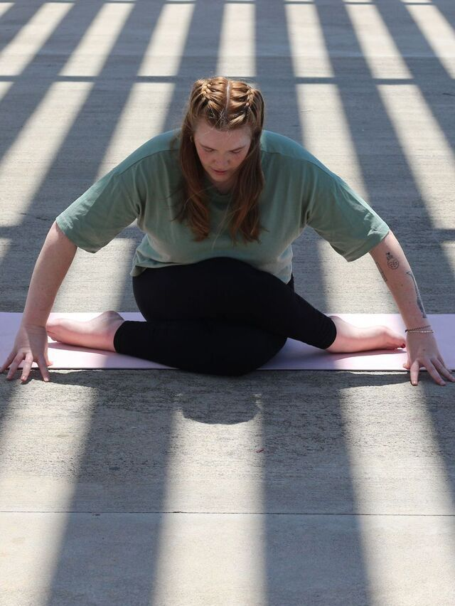

 



Yoga ist weit mehr als nur Bewegung – es verbindet Körper, Geist und Atem. Durch bewusste Asanas, Atemtechniken und Meditation finden wir innere Ruhe und gleichzeitig Kraft. Ob für Entspannung, Beweglichkeit oder Klarheit im Alltag: Yoga ist ein Weg zu mehr Achtsamkeit und Balance.
Mehr über mich
Hallo, ich bin Selina – Yogalehrerin & Gesundheitswissenschaftlerin.
Mit 33 Jahren bringe ich nicht nur meine eigene Leidenschaft für Bewegung mit, sondern auch fundiertes Wissen:
Yoga bedeutet für mich mehr als körperliche Bewegung – es ist ein Raum, in dem wir einfach nur sein dürfen.
Frei von Bewertung. In meinen Stunden möchte ich dir die Möglichkeit geben, den Alltag loszulassen, Stress abzubauen und wieder mehr bei dir selbst anzukommen.
Ob im fließenden Vinyasa oder im ruhigen Yin: Mein Ziel ist, dass du die Stunde mit einem guten Gefühl verlässt – entspannt, leichter, achtsamer … und manchmal auch mit einem Lächeln im Gesicht. 🌿✨
Ein Blick in meine Yoga-Welt: Hier fangen wir die ruhige Atmosphäre, die fließenden Bewegungen und die kleinen Momente der Achtsamkeit ein, die meine Stunden so besonders machen. Lass dich inspirieren und spüre schon jetzt ein Stück Entspannung. Blättere durch die Bilder, entdecke dein Lieblingsasana oder erhasche einen Eindruck vom Studio – deine Matte wartet schon.

📅 Mittwoch:
# 17:00 Uhr Vinyasa Yoga
# 18:15 Uhr Yin Yoga
📠Bischwiese 2, in den Räumen der TSG Niefern
Dein Platz auf der Matte wartet
Komm vorbei, roll die Matte aus und probier’s aus – ich freu mich auf dich!